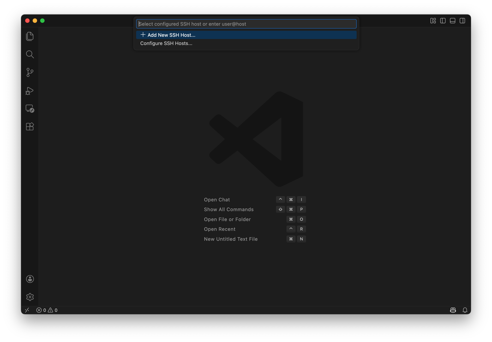
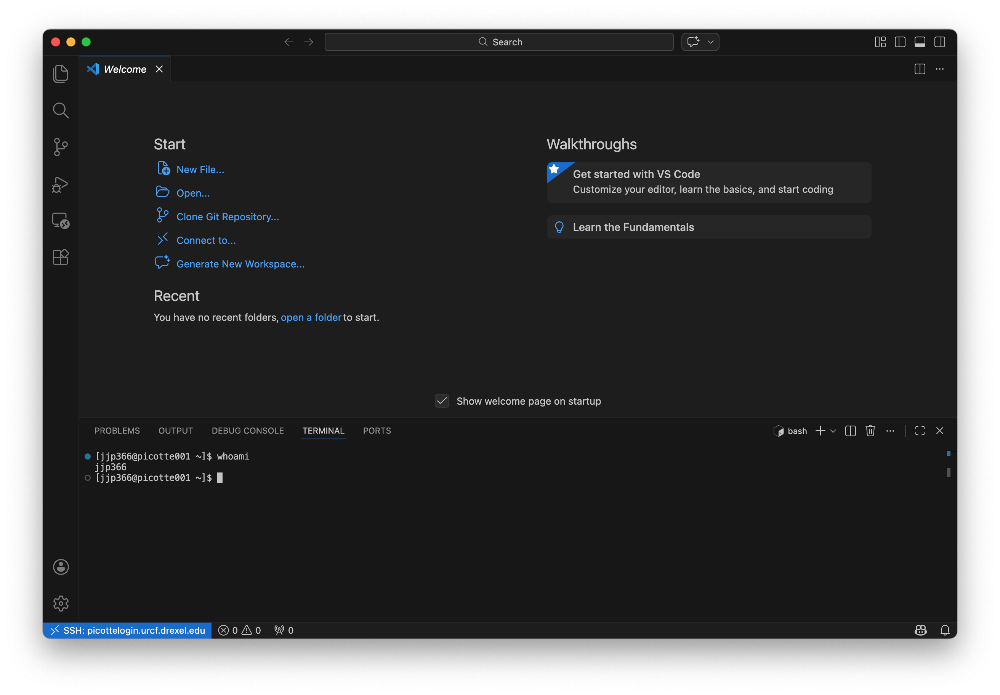

Accessing Picotte#
Connecting with VSCode#
To access Picotte, we’ll use VSCode’s “Remote - SSH” extension, which connects your editor to Picotte over the network using SSH[1]. Once connected, VSCode’s built-in terminal, file browser, and text editor all operate directly on Picotte — giving you a seamless way to work on the cluster.
Connect to Picotte#
Open VSCode.
Click the Remote indicator in the bottom-left corner of the window (it looks like a
><icon).
Select “Connect to Host…” from the menu that appears.
A text box will appear at the top of the window, prompting you to “Select configured SSH host or enter user@host”. In this box, type:
YOUR_PICOTTE_USERNAME@picottelogin.urcf.drexel.edu
replacing
YOUR_PICOTTE_USERNAMEwith your actual Picotte username. This is usually the same as your Drexel username (your email address without the@drexel.edu[2]).
If prompted to select the platform of the remote host, choose Linux.
Enter your password when prompted. This is your Picotte password, not your main Drexel password! Your Picotte account is separate from your main Drexel account, and the passwords are independent from each other — they just use the same username for convenience.

Wait for VSCode to finish setting up. The remote indicator in the bottom-left will change to show
SSH: picottelogin.urcf.drexel.eduwhen you’re connected.
Your first command#
Now that you’re connected, let’s open a terminal on Picotte. Press
Ctrl+Shift+` (that is: hold down
Ctrl and Shift, then press the key with the `
character, usually in the upper-left of your keyboard) to open VSCode’s
integrated terminal. You can also open it from the menu: Terminal → New
Terminal.
This terminal is running on Picotte, not on your local computer. You should see
a prompt like this, with username replaced by your actual Picotte username:
[username@picotte001 ~]$
picotte001 is another name for picottelogin — this is telling us that we’re
connected to Picotte.

Let’s enter our first command! Type the command whoami, then press Enter to
send the command to Picotte. The command’s output is your username.
whoami

Save Picotte as a configured host (optional)
You can save Picotte’s connection details so it appears in your host list for quick access in the future.
Press
Ctrl+Shift+P(Windows/Linux) orCmd+Shift+P(macOS) to open the Command Palette.Type “Remote-SSH: Open SSH Configuration File…” and select it.
Choose the default config file (usually
/Users/YOUR_USERNAME/.ssh/configon macOS/Linux orC:\Users\YOUR_USERNAME\.ssh\configon Windows).Add the following block, replacing
YOUR_PICOTTE_USERNAMEwith your actual username:Host picotte HostName picottelogin.urcf.drexel.edu User YOUR_PICOTTE_USERNAME
Save the file (Ctrl+S on Windows/Linux or Cmd+S on macOS).
Now, when you click the remote indicator and choose “Connect to Host…”, picotte will appear in the list — just click it to connect.
How does SSH work?#
What’s actually happening when VSCode connects? Let’s imagine your username is bn23. When you tell VSCode to connect to:
bn23@picottelogin.urcf.drexel.edu
VSCode connects to the computer called picottelogin.urcf.drexel.edu, logging
in as the username bn23.
picottelogin.urcf.drexel.edu is called the hostname or address of the
remote machine. It’s just a name that lets you refer to another computer on a
network. This is just like typing google.com into your web browser:
google.com is just a name you use to refer to Google’s servers;
picottelogin.urcf.drexel.edu is a name you use to refer to Picotte.
After you’re connected, when you type a command like whoami and press enter in
the integrated terminal, rather than running whoami on your local computer,
VSCode sends the command to the remote machine, which runs it and sends back the
output. In this way, it feels like you’re directly connected to the remote
machine because the commands you want to run and their output are being shuffled
over the network for you.

Fig. 6 VSCode sends commands to a remote server and receives output back#